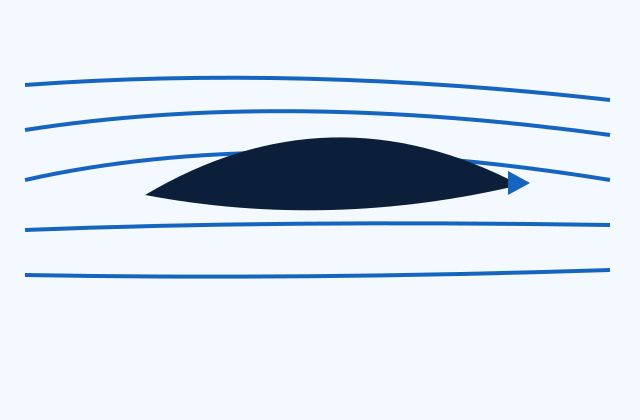

Lift
An aerodynamic force acting mainly perpendicular to the relative airflow. Wings generate lift by changing pressure and momentum around them.
Flight Concepts
Start with the forces, then connect pressure, airflow, stability, and propulsion into one flight system.
Foundation
Flight depends on the balance and direction of four primary forces.
An aerodynamic force acting mainly perpendicular to the relative airflow. Wings generate lift by changing pressure and momentum around them.
The gravitational force acting through an aircraft's center of gravity. It depends on mass and local gravitational acceleration.
The propulsive force produced by propellers, jet engines, or rockets to move the vehicle forward.
A force opposing motion through the air. It includes skin-friction, pressure, induced, and wave drag.
Interactive calculator
The calculator uses the standard lift equation. Enter representative values to see how density, speed, wing area, and lift coefficient affect lift.
L = ½ρV²SCL

Airflow
An airfoil shapes the surrounding flow. Pressure differences act over the wing surface, while the wing also redirects air downward. Both descriptions are consistent parts of the same aerodynamic process.
Increasing angle of attack usually increases lift coefficient until flow separation becomes severe. Beyond the critical angle, the wing stalls and lift decreases.
Control and stability
Rotation around the longitudinal axis, controlled mainly by ailerons.
Rotation around the lateral axis, controlled mainly by the elevator or stabilator.
Rotation around the vertical axis, controlled mainly by the rudder.